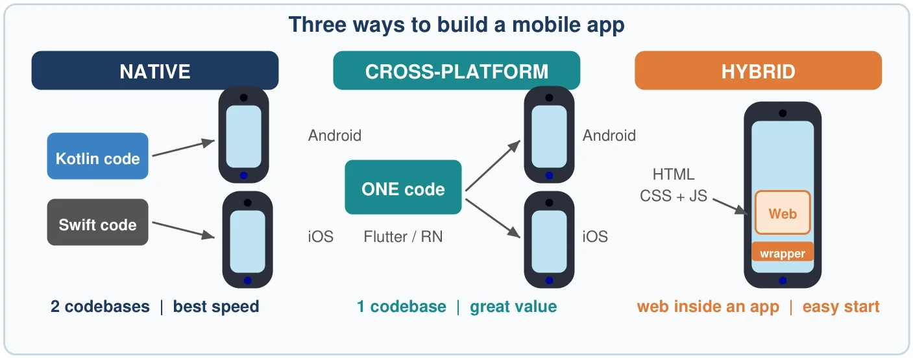

6. The three types of mobile apps
Mobile apps are built in three main ways. Understanding them helps you pick the right technology before investing months of study.
6.1 Native apps
A native app is built separately for each operating system, using the official language and tools of that system.
- Android: Kotlin or Java, Android Studio, Jetpack Compose.
- iOS: Swift, Xcode, SwiftUI.
- Advantages: best speed, smoothest look and feel, full access to new phone features.
- Disadvantages: two separate codebases, so more time, more cost and often two teams.
6.2 Cross-platform apps
One codebase produces apps for both Android and iOS, with performance close to native.
- Examples: Flutter (Dart), React Native (JavaScript), Kotlin Multiplatform.
- Advantages: faster and cheaper development, one team, consistent design.
- Disadvantages: very special device features may need native code; the framework adds some app size.
6.3 Hybrid (web-based) apps
A hybrid app is a web app wrapped inside a native shell and installed like a normal app.
- Examples: Ionic, Cordova, Capacitor.
- Advantages: web developers can start quickly; one codebase.
- Disadvantages: usually slower and less smooth than native or cross-platform.

Figure 6.1: Native, cross-platform and hybrid apps
6.4 Side-by-side comparison
| Native | Cross-platform | Hybrid | |
|---|---|---|---|
| Codebases | One per OS | One | One |
| Performance | Best | Very good | Fair |
| Development cost | Highest | Medium | Lowest |
| Device features | Full | Almost full | Via plugins |
| Languages | Kotlin/Java, Swift | Dart, JavaScript | HTML, CSS, JS |
| Best for | Games, heavy apps, top quality | Most business and startup apps | Simple apps, quick prototypes |
Remember There is no single best choice. Native gives the highest quality, cross-platform gives the best value, and hybrid gives the lowest barrier for web developers. Today most beginners choose Native Android (Kotlin) or Flutter.
Review Questions
- What is the main disadvantage of native development?
- Name two cross-platform frameworks.
- When might a hybrid app be a good choice?
Was this lesson helpful?